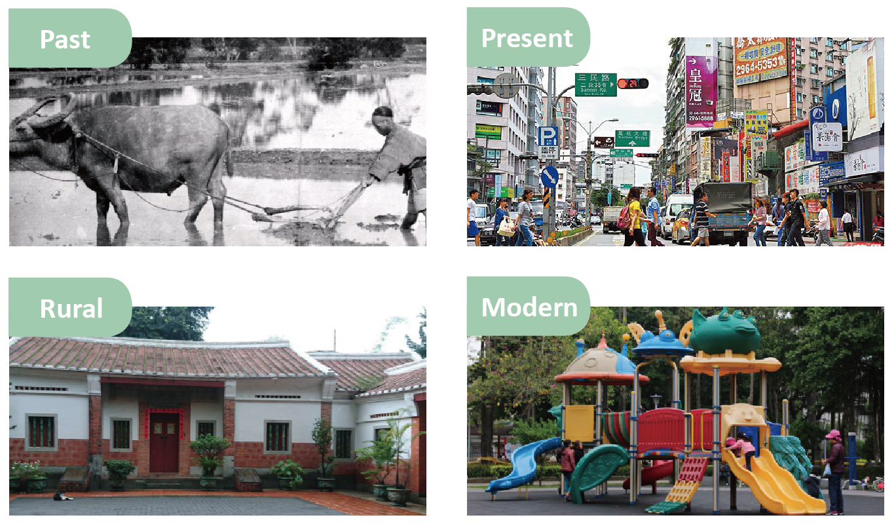
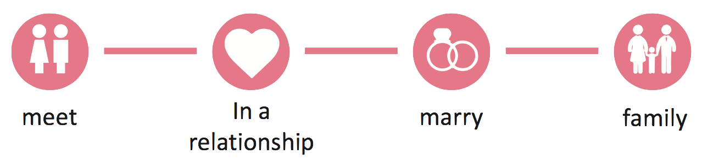

A Father's Letter
Outdoor Pervasive Game Design
Project Aim
Using the simplest toolkit, the aim of this project is to encourage people to engage with the local environment.
Type
Side Project
Role
I was in charge of history review, the web development and the design of the playing cards. We created the puzzles, constructed user testing and discussed final design together.
Team
3 members
Duration
1 months, Apr 2018 - May 2018
Design Brief

The core of this project is the puzzles. They are designed specifically from the local environment.
Combining the use of the playing cards and the website, players could gain playful experiences from this pervasive game.
Final Product

- A set of playing cards
- A designed website: https://fathersletter.github.io/0.html
The function of the toolkit is to connect between the puzzles and the environmental clues.
We want the toolkit to be easy to bring, familiar to users and able to carry abundant information, thus we chose “playing cards” which fit to our needs.
Puzzles: Samples

Playing Cards: Samples

History Review and Environment Analysis
I grew up in this neighborhood, so part of the resources came from my parents.
The rural settlements once constructed here could date back to 17th century. Nowadays, as a rapid growing area in Taiwan, there are no more cropland here, which could be seen 20 years ago.
Two adjacent parks demonstrates different characteristics which can be representative to the past and the present.
Story
We combined the historical and modern characteristics into the story. From past to present, a father made this game as a gift to his wife. He wrote love letters telling their love story from 30 years ago.
Participants played as their children who helped their mother to solve the puzzles and experience what they have been through in the past.
Evaluation
In order to optimize the gaming experience, two groups of people were invited to test. One group has expertise in playing puzzles, and the other one is novice.
Key Points:
- How long they spent on every puzzle
- Whether the puzzle caused confusion and frustration.
Web Development
I was fully responsible for developing the web pages, which used mobile-first responsive website design to display the story and puzzles.
Furthermore, I emphasized on the assistance provided on the website to help players solve all the puzzles without any aid in the real world.
- The answer box built with Javascript could generate different responses according to users’ inputs.
- The hints were revised according to the feedback of the user test.
Language: HTML, CSS, Bootstrap, Javascript